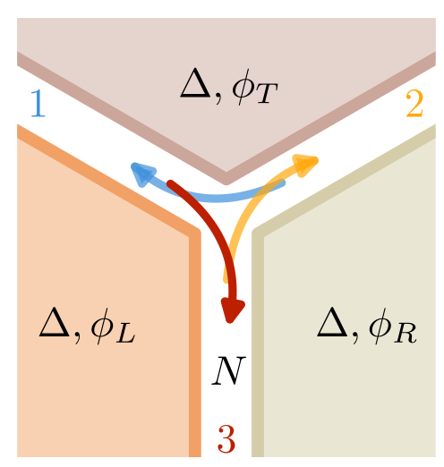
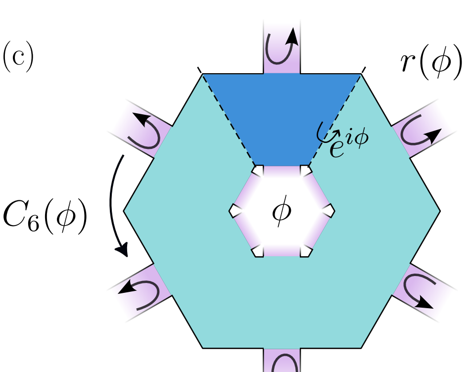

Research
I enjoy thinking about problems that require combining analytical insight with equations only a computer can solve. Mesoscopic systems often benefit from this approach: they are small enough to behave quantum mechanically, and yet large enough to require several degrees of freedom to describe them.

Usually, protecting transport in a quantum system requires either topological band structures or adiabaticity in real space.My colleagues and I found a mechanism that works under neither of these conditions, relying instead on phase-space adiabaticity. We considered three superconductors with different phases that meet at a trijunction, and we unexpectedly found that the Andreev modes between them propagate in a clockwise fashion and without any reflection—two hallmarks of protected chiral quantized transport. Check out our paper for more details!

How to characterize and study topological phases of matter in the presence of disorder? Disorder may kill a topological phase, but it may also induce one, and it inherently breaks the translational symmetry of a crystal.My colleagues and I generalized the theory of scattering invariants to topological phases protected by spatial symmetries, and used it to build a formalism that applies to disordered systems.
Complex quantum mechanical systems with many degrees of freedom are often impossible to solve analytically, or even numerically; in many cases only an effective low-energy model can help. A common approach is to use the Schrieffer–Wolff transformation to block-diagonalize the Hamiltonian perturbatively, separating the low-energy subspace from the rest.
My colleagues and I developed an efficient and general algorithm and a Python package 📦 that automates this process. Check Pymablock out! ✨.
Publications
-
2026
Probing Cooper pair momentum by quasiparticle steering with planar Josephson junctionsIsidora Araya Day, Anton R. Akhmerov, Antonio R. L. Manesco, arXiv:2607.08845
The Cooper pair momentum in a superconductor is associated with a phase gradient of the superconducting order parameter. In general, this momentum is small compared to the Fermi momentum, which makes it challenging to measure. Josephson junctions, however, enable the creation of large phase gradients and transfer of the Cooper pair momentum to quasiparticles via Andreev reflection. In this work we demonstrate that Andreev bound states propagating along ballistic planar Josephson junctions eject into an adjacent normal region at a phase-controlled angle that scales as \(\Theta \sim \sqrt{\Delta/ \mu}\), where \(\Delta\) is the superconducting gap and \(\mu\) is the chemical potential. This angle parametrically exceeds the conventional Cooper pair momentum scale \(\Delta/ \mu\), and thus this phenomenon is sizeable even within the Andreev approximation regime \(\Delta / \mu \ll 1\). Our results establish phase-controlled quasiparticle ejection as a kinematic probe of condensate momentum transfer: unlike existing probes that detect the Doppler energy shift, the signal appears as a momentum-space deflection of emitted quasiparticles.
-
Topological GyromorphsLaura Gómez Paz, Justin Schirmann, Adam Yanis Chaou, Isidora Araya Day, Adolfo G. Grushin, Phys. Rev. B 114, L080201 · Editors' Suggestion
Gyromorphs are a new class of disordered systems that combine an amorphous-like absence of translational order with quasi-long-range rotational order. Gyromorphs can outperform quasicrystals or hyperuniform arrangements in forming isotropic band gaps, suggesting an avenue to realize robust disordered topological phases. However, gyromorphs lack exact rotational symmetry, which is only realized on average, posing an obstacle for existing real-space invariants to correctly diagnose topological gyromorphs. In this work we show that gyromorphs can host higher-order topological insulating (HOTI) phases protected by average rotational symmetry, and we develop and systematically compare tools for diagnosing topological phases protected by such symmetry. We introduce symmetry indicators of the effective Hamiltonian based on average rotational symmetries which, when combined with the spectral localizer and a scattering invariant, draw a consistent topological phase diagram. Our work unlocks gyromorphs as a novel platform to study topological phases beyond crystals, quasicrystals, and amorphous materials.
-
Symmetric approximant formalism for statistical topological matterR. Johanna Zijderveld, Adam Yanis Chaou, Isidora Araya Day, Anton R. Akhmerov, arXiv:2601.00784
The standard approach to characterizing topological matter, computing topological invariants, fails when the symmetry protecting the topological phase is preserved only on average in a disordered system. Because topological invariants rely on enforcing the symmetry exactly, they can overcount phases by incorrectly identifying certain non-robust features as robust. Moreover, in intrinsic statistical topological insulators, enforcing the symmetry exactly is guaranteed to destroy the topological phase. We define a mapping that addresses both issues and provides a unified framework for describing disordered topological matter.
-
2025
Identifying biases of the Majorana scattering invariantIsidora Araya Day, Antonio L. R. Manesco, Michael Wimmer, Anton R. Akhmerov, SciPost Phys. Core 8, 047
The easily accessible experimental signatures of Majorana modes are ambiguous and only probe topology indirectly: for example, quasi-Majorana states mimic most properties of Majoranas. Establishing a correspondence between an experiment and a theoretical model known to be topological resolves this ambiguity. Here we demonstrate that already theoretically determining whether a finite system is topological is by itself ambiguous. In particular, we show that the scattering topological invariant -- a probe of topology most closely related to transport signatures of Majoranas -- has multiple biases in finite systems. For example, we identify that quasi-Majorana states also mimic the scattering invariant of Majorana zero modes in intermediate-sized systems. We expect that the bias due to finite size effects is universal, and advocate that the analysis of topology in finite systems should be accompanied by a comparison with the thermodynamic limit. Our results are directly relevant to the applications of the topological gap protocol.
-
Kramers-protected hardware-efficient error correction with Andreev spin qubitsHaoran Lu, Isidora Araya Day, Anton R. Akhmerov, Bernard van Heck, Valla Fatemi, Phys. Rev. Lett. 135, 210602
We propose an architecture for bit-flip error correction of Andreev spins that is protected by Kramers' degeneracy. Specifically, we show that a coupling network of linear inductors and Andreev spin qubits results in a static Hamiltonian composed of the stabilizers of a bit-flip code. The electrodynamics of the many-body spin states also respect these stabilizers, and we show how reflectometry off a single coupled resonator can thereby accomplish their projective measurement. We further show how circuit-mediated spin couplings enable error correction operations and a complete set of single- and two-module logical quantum gates. The concept, which we dub the Ising molecule qubit (or Isene), is experimentally feasible and provides a path for compact noise-biased qubits.
-
Scattering theory of higher order topological phasesR. Johanna Zijderveld, Isidora Araya Day, Anton R. Akhmerov, SciPost Phys. 19, 058
The surface states of intrinsic higher order topological phases are protected by the spatial symmetries of a finite sample. This property makes the existing scattering theory of topological invariants inapplicable because the scattering geometry is either incompatible with the symmetry or does not probe the bulk topology. We resolve this obstacle by using a symmetric scattering geometry that probes transport from the inside to the outside of the sample. We demonstrate that the intrinsic higher order topology is captured by the flux dependence of the reflection matrix. Our finding follows from identifying the spectral flow of a flux line as a signature of higher order topology. We show how this scattering approach applies to several examples of higher order topological insulators and superconductors. Our theory provides an alternative approach for proving bulk--edge correspondence in intrinsic higher order topological phases, especially in presence of disorder.
-
Pymablock: an algorithm and a package for quasi-degenerate perturbation theoryIsidora Araya Day, Sebastian Miles, Hugo K. Kerstens, Daniel Varjas, Anton R. Akhmerov, SciPost Phys. Codebases 2025, 50
A common technique in the study of complex quantum-mechanical systems is to reduce the number of degrees of freedom in the Hamiltonian by using quasi-degenerate perturbation theory. While the Schrieffer--Wolff transformation achieves this and constructs an effective Hamiltonian, its scaling is suboptimal, it is limited to two subspaces, and implementing it efficiently is both challenging and error-prone. We introduce an algorithm for constructing an equivalent effective Hamiltonian as well as a Python package, Pymablock, that implements it. Our algorithm combines an optimal asymptotic scaling and the ability to handle any number of subspaces with a range of other improvements. The package supports numerical and analytical calculations of any order and it is designed to be interoperable with any other packages for specifying the Hamiltonian. We demonstrate how the package handles constructing a k.p model, analyses a superconducting qubit, and computes the low-energy spectrum of a large tight-binding model. We also compare its performance with reference calculations and demonstrate its efficiency.
-
Chiral adiabatic transmission protected by Fermi surface topologyIsidora Araya Day, Kostas Vilkelis, Antonio L. R. Manesco, A. Mert Bozkurt, Valla Fatemi, Anton R. Akhmerov, SciPost Phys. 18, 098
We demonstrate that Andreev modes that propagate along a transparent Josephson junction have a perfect transmission at the point where three junctions meet. The chirality and the number of quantized transmission channels is determined by the topology of the Fermi surface and the vorticity of the superconducting phase differences at the trijunction. We explain this chiral adiabatic transmission (CAT) as a consequence of the adiabatic evolution of the scattering modes both in momentum and real space. The dispersion relation of the junction then separates the scattering trajectories by introducing inaccessible regions of phase space. We expect that CAT is observable in nonlocal conductance and thermal transport measurements. Furthermore, because it does not rely on particle-hole symmetry, CAT is also possible to observe directly in metamaterials.
-
2023
Pfaffian invariant identifies magnetic obstructed atomic insulatorsIsidora Araya Day, Anastasiia Varentcova, Daniel Varjas, Anton R. Akhmerov, SciPost Phys. 15, 114
We derive a \(\mathbb{Z}_4\) topological invariant that extends beyond symmetry eigenvalues and Wilson loops and classifies two-dimensional insulators with a \(C_4 \mathcal{T}\) symmetry. To formulate this invariant, we consider an irreducible Brillouin zone and constrain the spectrum of the open Wilson lines that compose its boundary. We fix the gauge ambiguity of the Wilson lines by using the Pfaffian at high symmetry momenta. As a result, we distinguish the four \(C_4 \mathcal{T}\)-protected atomic insulators, each of which is adiabatically connected to a different atomic limit. We establish the correspondence between the invariant and the obstructed phases by constructing both the atomic limit Hamiltonians and a \(C_4 \mathcal{T}\)-symmetric model that interpolates between them. The phase diagram shows that \(C_4 \mathcal{T}\) insulators allow \(\pm 1\) and \(2\) changes of the invariant, where the latter is overlooked by symmetry indicators.
-
2022
Topological defects in a double-mirror quadrupole insulator displace diverging chargeIsidora Araya Day, Anton R. Akhmerov, Daniel Varjas, SciPost Phys. Core 5, 053
We show that topological defects in quadrupole insulators do not host quantized fractional charges, contrary to what their Wannier representation indicates. In particular, we test the charge quantization hypothesis based on the Wannier representation of a parametric defect and a disclination. Against the expectations, we find that the local charge density decays as \(\sim 1/r^2\) with distance, leading to a diverging defect charge. We identify sublattice symmetry and not higher order topology as the origin of the previously reported charge quantization.
-
2017
Slanted snaking of localized Faraday wavesBastián Pradenas, Isidora Araya, Marcel G. Clerc, Claudio Falcón, Punit Gandhi, Edgar Knobloch, Phys. Rev. Fluids 2, 064401
We report on an experimental, theoretical and numerical study of slanted snaking of spatially localized parametrically excited waves on the surface of a water-surfactant mixture in a Hele-Shaw cell. We demonstrate experimentally the presence of a hysteretic transition to spatially extended parametrically excited surface waves when the acceleration amplitude is varied, as well as the presence of spatially localized waves exhibiting slanted snaking. The latter extend outside the hysteresis loop. We attribute this behavior to the presence of a conserved quantity, the liquid volume, and introduce a universal model based on symmetry arguments, which couples the wave amplitude with such a conserved quantity. The model captures both the observed slanted snaking and the presence of localized waves outside the hysteresis loop, as demonstrated by numerical integration of the model equations.
Talks
-
2026
Pymablock software demo, upcoming contributed talkNumerical methods for quantum matter: From nanographenes to moiré materials at San Sebastián, Spain
-
Topological Gyromorphs, invited talk · slidesAnnual Meeting of the Austrian Physical Society at Graz, Austria
-
Agentic LLMs in scientific research, invited talk · slidesSUMMIT Quantum Limits at Dokkum, The Netherlands
-
Designing topological two-dimensional materials, public talk · slidesPint of Science 2026 at Mala Gissona, San Sebastián, Spain
-
Scattering theory of higher-order topological insulators, seminar · slidesCNRS seminar at French National Centre for Scientific Research, Grenoble, France
-
2025
Chiral adiabatic transmission protected by Fermi surface topology, seminarCNRS seminar at French National Centre for Scientific Research, Grenoble, France
-
2024
Chiral adiabatic transmission protected by Fermi surface topology, invited talkCCMR Symposium on Hybrid Superconductivity at Cornell University, Ithaca, United States of America
-
Chiral adiabatic transmission protected by Fermi surface topology, seminarCondensed Matter Seminar at Massachusetts Institute of Technology, Boston, United States of America
-
Chiral adiabatic transmission protected by Fermi surface topology, seminarCondensed Matter Journal Club at University of Zurich, Zurich, Switzerland
-
Chiral adiabatic transmission protected by Fermi surface topology, contributed talkNWO Physics Conference at Veldhoven, The Netherlands
-
2023
Pymablock: a software package for constructing effective models, contributed talkSpeakers' Corner, Virtual Science Forum (online)
-
Pfaffian invariant identifies magnetic obstructed atomic insulators, contributed talkGrete Hermann Network Workshop at Würzburg, Germany
-
Pfaffian invariant identifies magnetic obstructed atomic insulators, seminarCondensed Matter Seminar at University of Manchester, Manchester, United Kingdom
-
2022
Pfaffian invariant identifies magnetic obstructed atomic insulators, seminarCondensed Matter Seminar at Max Planck Institute for the Physics of Complex Systems, Dresden, Germany
-
Pfaffian invariant identifies magnetic obstructed atomic insulators, contributed talkSpeakers' Corner, Virtual Science Forum (online)
-
Topological defects in a double-mirror quadrupole insulator displace diverging charge, contributed talkSpeakers' Corner, Virtual Science Forum (online)